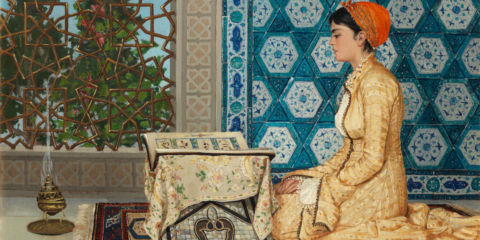
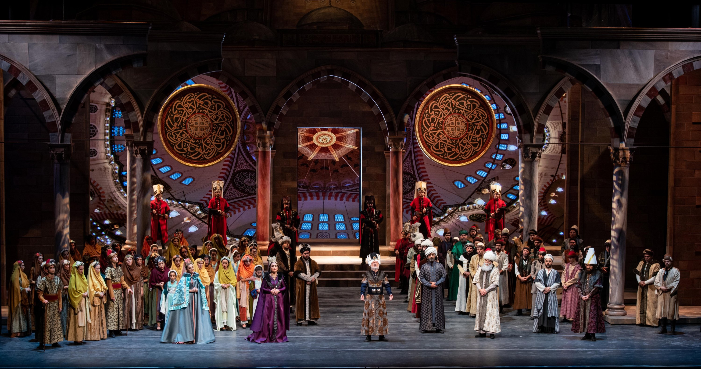
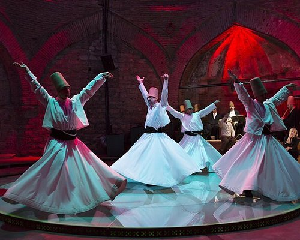
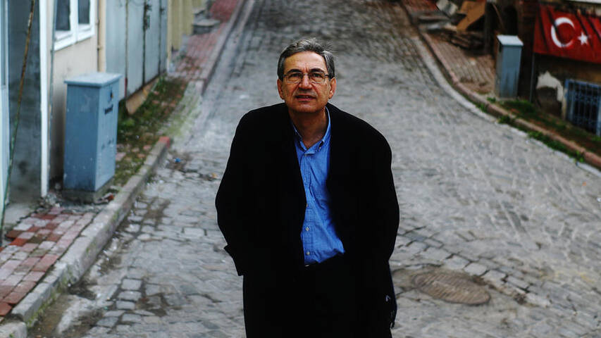

The Art of Istanbul
Istanbul is home to a vibrant art scene that includes everything from classical Ottoman miniatures to cutting-edge contemporary installations. The city's many museums, like the Istanbul Modern and Pera Museum, offer an in-depth look into the artistic journey of the region.
Wandering through the Grand Bazaar, you'll find intricate handmade tiles and carpets that carry on centuries-old traditions. Meanwhile, emerging artists in neighborhoods like Karaköy and Kadıköy are redefining the future of Turkish art.
Music Scene
Istanbul has a pulsating music culture that caters to every taste. From traditional folk music with its soulful melodies to contemporary indie bands making waves in underground clubs, the city is a hub for diverse musical expression.
Don't miss the annual Istanbul Music Festival, where world-renowned orchestras and performers come to celebrate the city's love for music. For a more intimate experience, visit one of Istanbul's iconic meyhanes, where live performances will leave you captivated.
Dance & Performance
The art of dance holds a special place in Istanbul's cultural fabric. The city is a stage for a variety of performances, from mesmerizing whirling dervishes to contemporary dance troupes pushing creative boundaries.
Venues like the Atatürk Cultural Center and Süreyya Opera House host spectacular shows throughout the year. Whether you're drawn to the spirituality of Sufi dances or the vibrant energy of Turkish folk dance, Istanbul won't disappoint.
Istanbul in Literature
As the home of literary giants like Orhan Pamuk, Istanbul has inspired countless writers, poets, and storytellers. The city's layered history and breathtaking landscapes are immortalized in prose and poetry.
Strolling along the Bosphorus or through its ancient streets, you can experience the living pages of stories that have shaped Turkish literature. Bookshops and literary cafes scattered across the city offer a haven for literary enthusiasts.
